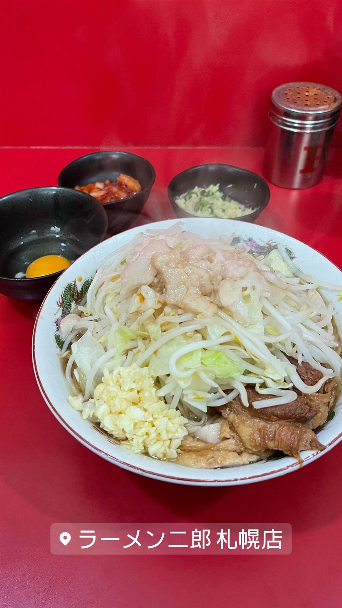

★ また行きたい二郎系(直系)で19位
ラーメン二郎 札幌店
本州以外で唯一の直系、桜台駅前店仕込みの二郎ラーメン
ラーメン二郎 札幌店
ラーメン二郎 札幌店は2013年、桜台駅前店などで修行した北海道日高町出身の店主が「二郎の味を地元に伝えたい」と本部に要請して開いた、北海道唯一の直系ラーメン二郎。本州以外では唯一の直系店という珍しい立ち位置ながら、味も接客も本流の二郎そのものと評判。
TRIVIA
豆知識
- 本州以外で唯一の直系二郎店
- 強面だが接客は丁寧でシャイな店主として知られる
REVIEWS
世間の評判
95ラーメンDB
二郎系にしては食べやすい微乳化
- 微乳化で醤油と豚の香りのバランスが良く食べやすいという声が多い
- 麺半分でも十分な量でワシワシ食べられるという声が複数ある
- 豚は厚みがあり美味しいのでもっと食べたいと感じる声が複数ある
ラーメンデータベース 口コミ188件・総合342位・最新 2026-09
| 創業 | 2013年3月31日創業 |
|---|---|
| 系譜 | 「ラーメン二郎 桜台駅前店」出身の店主が本部に要請して開業した直系二郎。三田本店・桜台駅前店で修行。 |
| 看板 | 二郎ラーメン |
| こだわり | コールは「ヤサイ・ニンニク・アブラ」が基本で、極太麺と大量の茹で野菜が二郎らしさを支える。 |
| どこから | 遠方 |
| 予算 | 昼 ～¥1,000 夜 ～¥1,000 |
| 定休日 | 日曜 |
| 場所 | JR/地下鉄 札幌駅 北海道札幌市北区北6条西8丁目8-11 |
| メモ | 食券制。初見客には店主が麺の量などを丁寧に確認してくれる。 |
食べたもの：二郎ラーメン
NEARBY
近い店・同じ系統の店
-
 ★
二郎系(直系) ひばりヶ丘
ラーメン二郎 ひばりヶ丘駅前店
笑顔の店主が迎える、二郎初心者にも入りやすい直系店
昼 ～¥999 夜 ～¥999
★
二郎系(直系) ひばりヶ丘
ラーメン二郎 ひばりヶ丘駅前店
笑顔の店主が迎える、二郎初心者にも入りやすい直系店
昼 ～¥999 夜 ～¥999
-
 ★
二郎系(直系) 京王堀之内駅
ラーメン二郎 八王子野猿街道店2
父も二郎系店主だった、父子二代にわたる直系二郎
昼 ~¥999 夜 ~¥999
★
二郎系(直系) 京王堀之内駅
ラーメン二郎 八王子野猿街道店2
父も二郎系店主だった、父子二代にわたる直系二郎
昼 ~¥999 夜 ~¥999
-
 ★
二郎系(直系) 伊勢佐木長者町駅
ラーメン二郎 横浜関内店
二郎の「汁なし」を早くから始めた発祥格の直系店
昼 ～¥999 夜 ～¥999
★
二郎系(直系) 伊勢佐木長者町駅
ラーメン二郎 横浜関内店
二郎の「汁なし」を早くから始めた発祥格の直系店
昼 ～¥999 夜 ～¥999
-
 ★
二郎系(直系) 松戸
ラーメン二郎 松戸駅前店
元は「ラーメンショップ」だった店が二郎に転換、三代続く味
昼 ～¥999 夜 ～¥999
★
二郎系(直系) 松戸
ラーメン二郎 松戸駅前店
元は「ラーメンショップ」だった店が二郎に転換、三代続く味
昼 ～¥999 夜 ～¥999
-
 ★
二郎系(直系) 神保町
ラーメン二郎 神田神保町店
三田本店直系の乳化系濃厚豚骨醤油が自慢の二郎ラーメン
昼 ¥1,000～¥1,999
★
二郎系(直系) 神保町
ラーメン二郎 神田神保町店
三田本店直系の乳化系濃厚豚骨醤油が自慢の二郎ラーメン
昼 ¥1,000～¥1,999
-
 ★
二郎系(直系) 中山駅
ラーメン二郎 中山駅前店
非乳化スープと柔らかめの極太麺「デロ麺」が名物の二郎直系
昼 ¥1,000～¥1,999 夜 ¥1,000～¥1,999
★
二郎系(直系) 中山駅
ラーメン二郎 中山駅前店
非乳化スープと柔らかめの極太麺「デロ麺」が名物の二郎直系
昼 ¥1,000～¥1,999 夜 ¥1,000～¥1,999